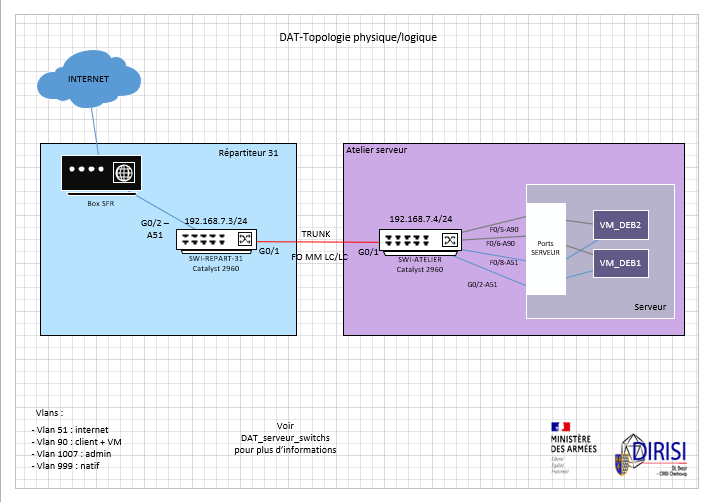
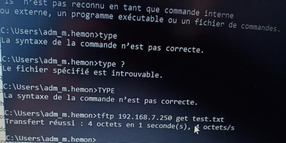

Mission 2 – Mise en place d’un serveur TFTP
Novembre 2024 – janvier 2025
C1 – Administrer
C4 – Sécuriser
Cette mission consiste à déployer un serveur TFTP afin de centraliser les systèmes d'exploitation des switchs afin de les mettre à jour plus facilement.
📋 Contexte et Objectifs
- Besoin de sauvegarde automatique des équipements réseau
- Centralisation des systèmes d'exploitations des switchs
- Sécurisation des accès au serveur
⚙️ Tâches Réalisées
- Installation et configuration du service TFTP
- Tests de sauvegarde et de restauration
- Gestion des droits et restrictions d’accès
- Documentation d’exploitation
🎓 Compétences Mobilisées
- C1 : administration de services réseaux
- C4 : sécurisation des échanges et accès
Traces


Sur la photo nous pouvons voir que le transfert d'un fichier vers ce serveur est un succès.
💭 Analyse Réflexive
J'ai pu pratiquer grâce à ce projet la partie système (mise en place d'un service) et donc me rendre compte que j'avais pas mal de lacunes concernant ce dernier. Néanmoins j'ai su avec persévérence me rendre au terme de ce projet.